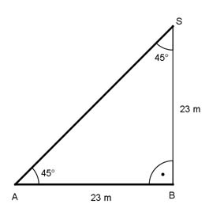

Aufgabe 240 Eine kegelförmige Kohlenhalde ist 23 m hoch und hat einen Böschungswinkel von 45°. Wie groß ist ihr Volumen V?  BS steht senkrecht auf AB --> Winkel ABS = 90°. Weil der Winkel SAB = 45° ist, muss der Winkel ASB auch 45° sein. Das Dreieck ABC ist somit gleichschenklig --> AB = BC = 23 m = Radius des Kegels. л * 23² m² * 23 m V = --------------------- = 12 735 m³ 3